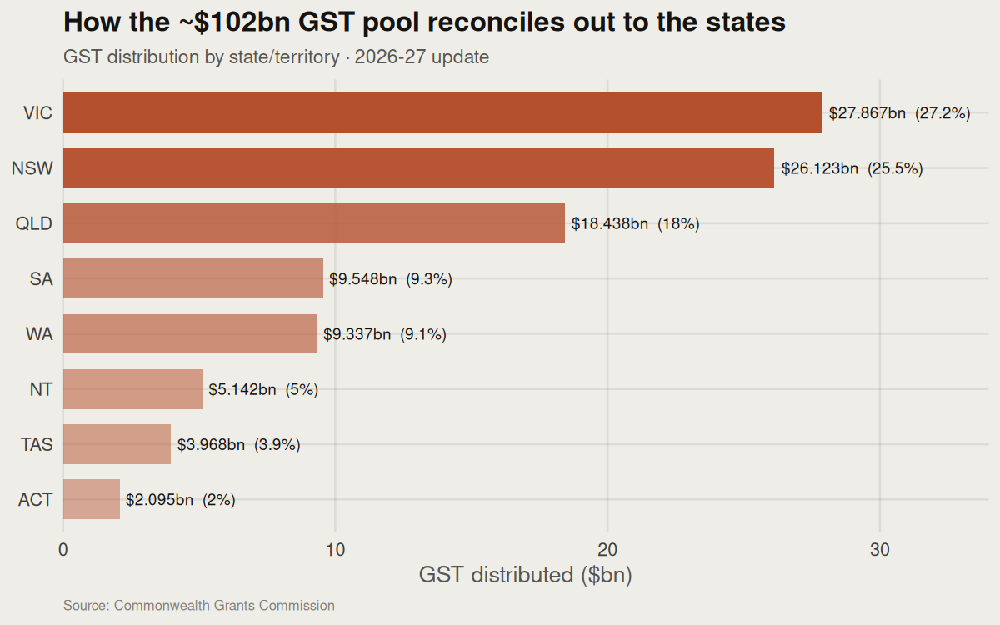

Real figures from the Commonwealth Grants Commission — Australia collects one national pool of GST, then reconciles it out to eight states and territories so each can fund comparable services. This is horizontal fiscal equalisation: allocation by need, not by where the tax was raised. No synthetic or modelled numbers.
GST is one national pool. It gets carved up so every state can deliver similar hospitals, schools and roads. Victoria ($27.9bn) and NSW ($26.1bn) take the biggest dollar shares, but the striking one is the Northern Territory: $5.1bn for well under a million people — many times what a straight population split would give it — while Western Australia's share is now protected by a legislated 0.75 floor. The call: this reconciliation is what lets a Tasmanian hospital or an NT school run on comparable footing to Sydney's — the fairness mechanism sitting underneath the federation.

| State / territory | GST received | Share of pool | Relative |
|---|
Every figure on this page is read from the Commonwealth Grants Commission 2026 Update by scripts/fetch_gst_reconciliation.py, which parses the report's own tables and checks the state distribution against the published pool total before writing the data.